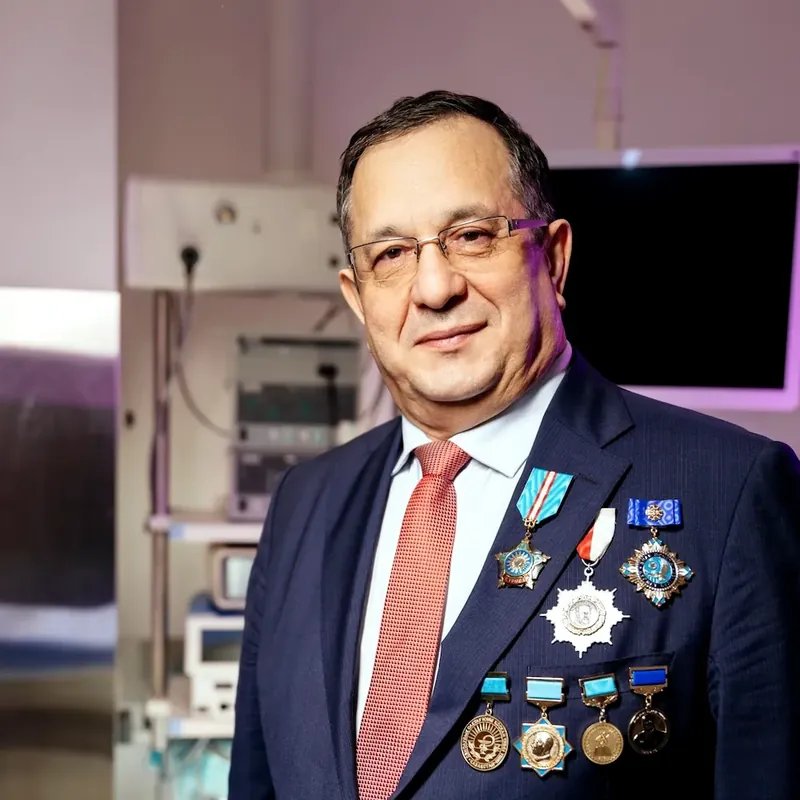

Низкий риск инфекции
Закрытая методика: ткани контактируют только с инструментами, это снижает риск инфекционных осложнений.

Лапароскопическая хирургия
Лапароскопическая холецистэктомия. Оперирует профессор Орал Оспанов, доктор медицинских наук, хирургический стаж - более 30 лет.
Истории пациентов в InstagramПоказания
Лапароскопическая холецистэктомия - удаление изменённого желчного пузыря целиком через проколы в брюшной стенке.
Операция
Операция выполняется через узкие каналы при помощи лапароскопа - телескопического устройства с видеокамерой и осветителем.
Через проколы вводят троакары, брюшную полость заполняют углекислым газом.
Специальными инструментами хирург выделяет, клиппирует и пересекает структуры желчного пузыря и удаляет его.
Преимущества
Закрытая методика: ткани контактируют только с инструментами, это снижает риск инфекционных осложнений.
Малая травматичность и очень маленькие разрезы.
В ряде случаев операция возможна амбулаторно.
Быстрое восстановление трудоспособности после операции.